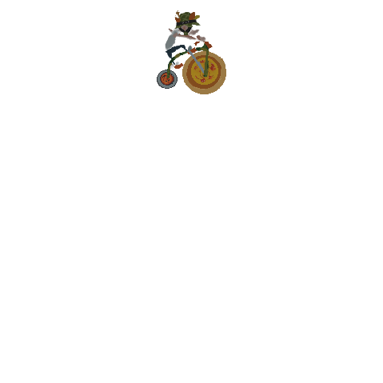
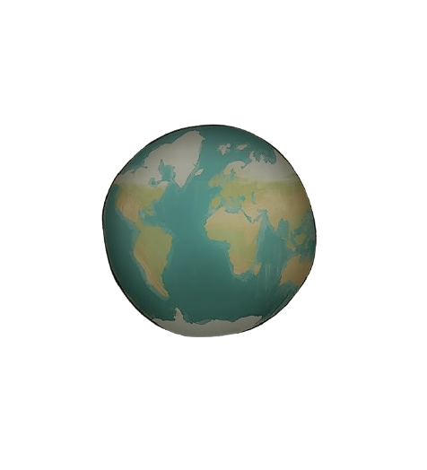

OP I GEAR
OP I GEAR er et brætspil udviklet af Artifact i samarbejde med Odense Kommune - Trafik og Mobilitet. OP I GEAR er ment som et sjovt og fællesskabende spil for børn i 10 – 12-årsalderen (4-6 klassetrin), og et fleksibelt værktøj for lærerne, som samtidig bringer kampagnen helt ude i klasserne. For at holde spillet simpelt og relaterbart kombinerer det elementer fra det klassiske pakkespil med fælles-quiz.
Vægkort

Ideen og visionen til verdenskortet kommer fra projektleder Stine Grønbæk fra Odense Kommune og er illustreret af Denni Pedersen fra Artifact.
Verdenskortet er omdrejningspunktet i kampagnen. Måden, man bevæger jer rundt på kortet, er ved at eleverne cykler en masse fælles ture. Jo mere de cykler, jo hurtigere kommer de verden rundt. Og hele skolen cykler sammen – alle klassers cykelture tæller på rejsen. Udover vægkortet, har vi også designet 3 brikker, som hver tjener sit formål:

Skolebriken
Skolebrikken viser hvor lang skolen er nået på verdenskortet. Den bliver flyttet fremad på kortet i kraft med eleverne cykler. Skolebrikken er drivkraften bag fællesindsatsen og den overordnet målsætning i kampagnen.

Præmiebrikken
Præmiebrikken præmier og små konkurrencer når skolebrikken lander på det samme felt som skolebrikken. Det giver eleverne mulighed for at visualiserer delmål og arbejde hen imod dem.